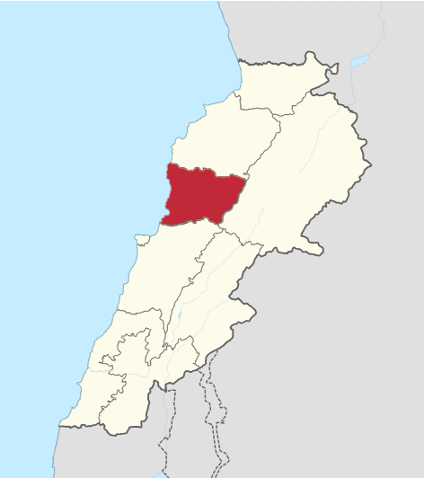
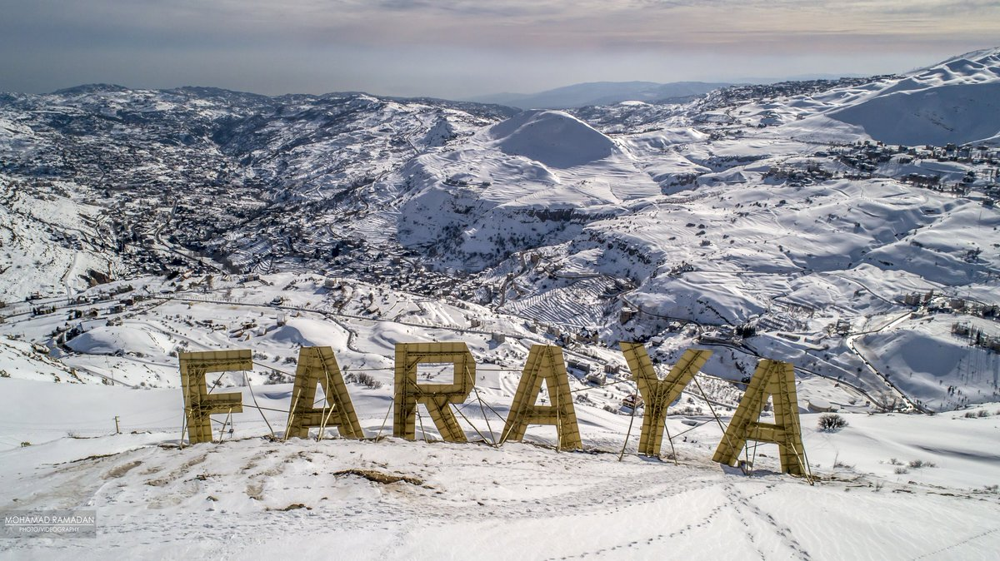
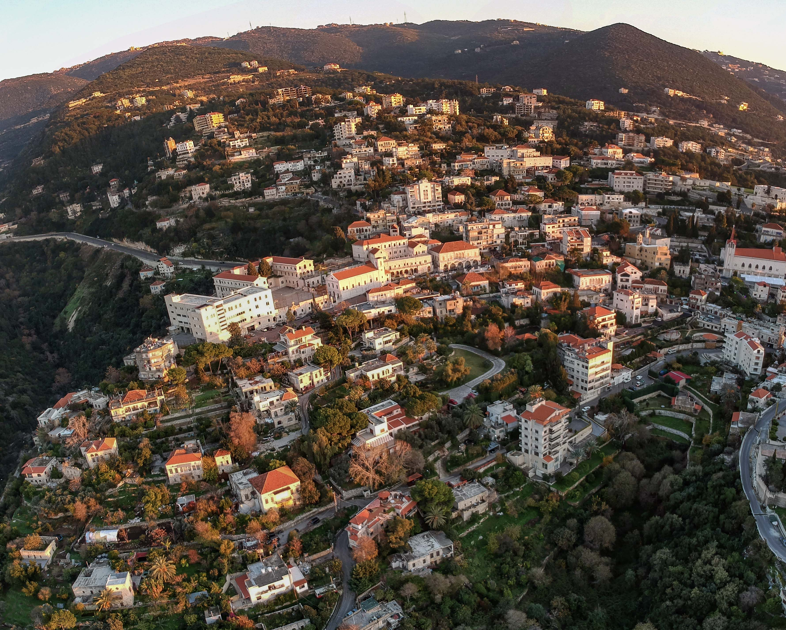
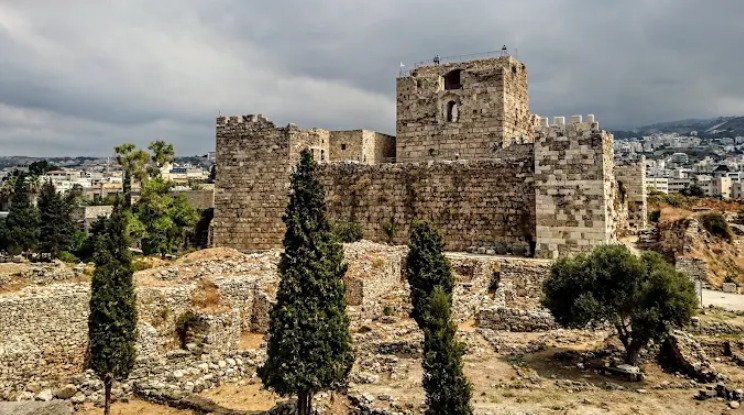
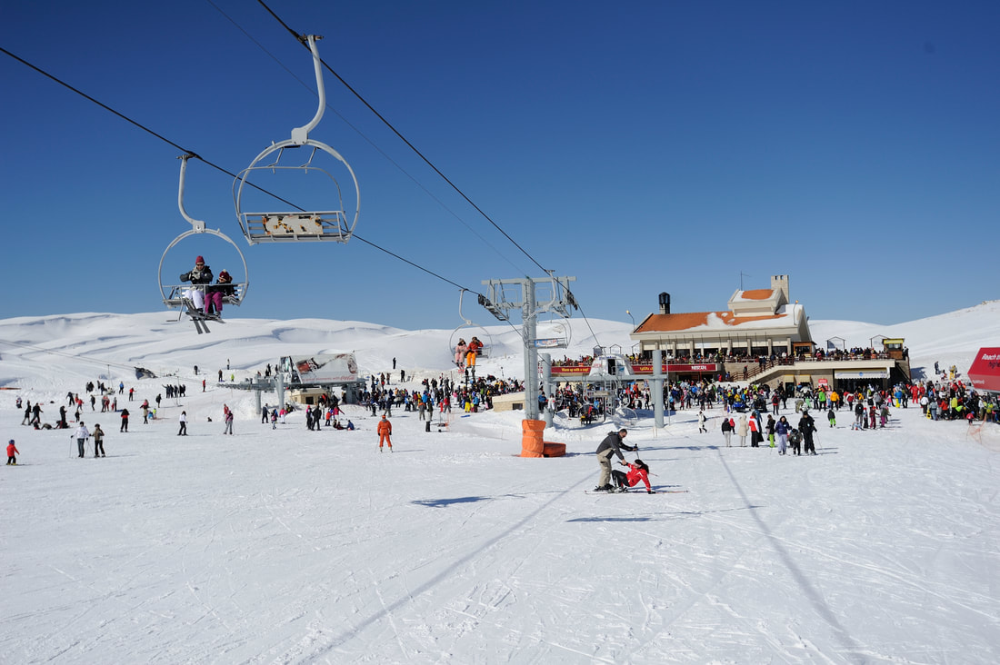
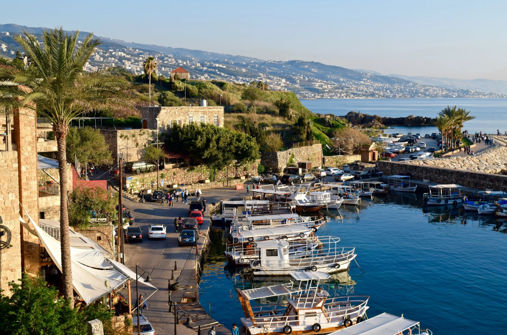
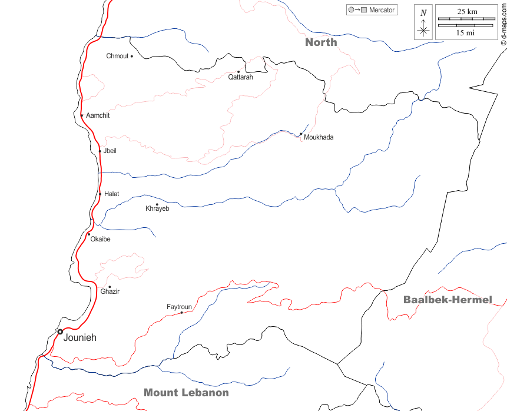
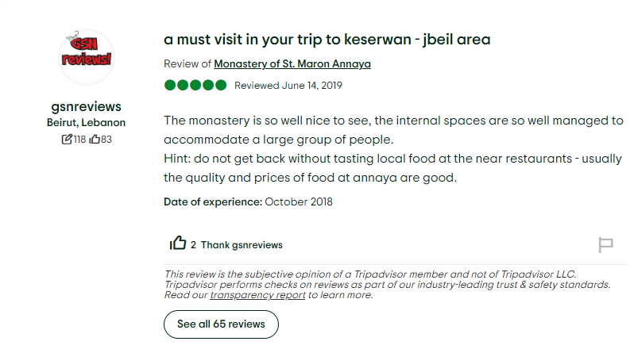

Ministry of Tourism Lebanon
DISCOVER LEBANON
Keserwan–Jbeil is one of Lebanon's newer governorates, formally established in 2017 when it was split from Mount Lebanon. It hugs the central coast north of Beirut and climbs steeply into the Lebanon Mountain range, covering a dramatic vertical span from sea level all the way up to peaks above 3,000 meters.
The coastline here is one of the most historically significant in the world. Byblos, modern-day Jbeil, sits on the shore and is considered one of the oldest continuously inhabited cities on Earth, with a recorded history stretching back over 7,000 years. Moving inland, the terrain rises through terraced hillsides of olive and fruit trees before giving way to the stark, snow-covered peaks of the high mountains.
The governorate is predominantly Maronite Christian in character, deeply rooted in Lebanese mountain culture, and proud of a heritage that stretches back to the earliest Phoenician settlements. It is a place where the ancient and the modern exist in close, comfortable proximity.


Jounieh is a vibrant coastal city built around one of the most beautiful natural bays in Lebanon. Its waterfront promenade, the Corniche of Jounieh, buzzes with restaurants, cafés, and nightlife that keep going well past midnight. The city is also the departure point for the Téléférique cable car, which climbs the mountain to the famous Our Lady of Lebanon shrine above Harissa.

Byblos is widely considered one of the oldest continuously inhabited cities in the world, with settlements dating back 7,000 years. Its old port is lined with fish restaurants and Phoenician ruins. The old city walls, Crusader castle, Roman colonnaded street, and ancient temples are all within walking distance of each other, an extraordinary concentration of history in a very small, very beautiful space.

Faraya is Lebanon's most popular ski destination, sitting high in the mountains above Keserwan at over 1,900 meters elevation. The Mzaar ski resort, one of the largest in the Middle East, receives heavy snowfall from December through March and draws thousands of skiers and snowboarders every winter. In summer, the same mountains become a destination for hiking, mountain biking, and paragliding.

A historic inland town perched on the slopes above Jounieh, Ghazir has long been a center of education and culture in Keserwan. It houses one of Lebanon's oldest Jesuit institutions and commands sweeping views of the bay below. Its traditional stone architecture, quiet streets, and cooler mountain air make it a welcome contrast to the coastal energy of Jounieh just minutes below.

The archaeological site of Byblos is one of the most layered and remarkable in the entire world. Excavations here have uncovered Neolithic settlements, Phoenician temples, an Egyptian burial ground, a Roman colonnaded street, and a Crusader castle, all within the same small area. The site gave the world the word "Bible," derived from the Greek name for Byblos, through which papyrus was traded to Greece. Walking through it is walking through the entire story of human civilization.
Standing on a mountain peak above Jounieh at 650 meters, the bronze statue of Our Lady of Lebanon is one of the most recognizable religious monuments in the Middle East. The site draws Christian pilgrims from across Lebanon and the Arab world, as well as visitors of all faiths drawn by the extraordinary panoramic view of the Jounieh Bay and the coastline stretching toward Beirut. The journey up by Téléférique cable car is an experience in itself.


Mzaar is the largest ski resort in Lebanon and one of the largest in the Middle East, with over 80 km of ski runs spread across four interconnected peaks. In winter it is a lively, buzzing destination with slopes for all levels. In summer, the same mountain transforms, the lifts carry hikers and mountain bikers up to trails with views stretching from the Beqaa Valley to the sea. A destination for all seasons at the top of the world.
The old fishing port of Byblos is one of the most charming corners of Lebanon, a small natural harbor framed by Crusader walls, filled with colorful wooden boats, and lined with seafood restaurants that have been feeding travelers for generations. The adjacent old souk sells Phoenician-inspired jewelry, handmade glassware, and local crafts. On summer evenings, the port comes alive with the Byblos International Festival, bringing world class music to one of the most ancient stages on Earth.

Keserwan–Jbeil is one of the most accessible governorates in Lebanon, sitting directly north of Beirut along the coastal highway. Jounieh is just 16 km from the capital, and Byblos is about 37 km, both easy day trips from Beirut.
International visitors arrive at Beirut–Rafic Hariri International Airport. From there, Jounieh is about 30 to 40 minutes north by car depending on traffic, and Byblos is about an hour along the coastal highway.
The coastal highway north from Beirut passes directly through Jounieh and continues to Byblos. A car is essential for reaching inland areas like Faraya, Ghazir, and the mountain villages, the mountain roads are winding but well paved and scenic.
Shared minibuses run frequently from Dawra Transport Hub in Beirut to both Jounieh and Byblos. They are cheap, reliable for the coastal route, and a good option for budget travelers staying close to the shore.
A unique transport experience, the Jounieh Téléférique cable car departs from the seafront and climbs the mountain to Harissa in about 8 minutes, offering one of the most spectacular views of the Lebanese coast. It operates daily and is both a practical transport link and a must-do attraction.

Keserwan–Jbeil is a governorate of extraordinary contrasts, ancient ruins and ski slopes, a Phoenician port and a mountain cable car, medieval city walls and modern beach clubs. It offers more variety per square kilometer than almost anywhere else in the country.
Spend a morning wandering through the Byblos archaeological site, 7,000 years of history compressed into a single hillside overlooking the sea.
Ride the Téléférique from Jounieh's seafront up to Harissa and stand before Our Lady of Lebanon with the entire bay spread out below you.
Eat freshly grilled fish at a wooden table on the Byblos old port, watching the fishing boats come and go as the sun drops into the Mediterranean.
In winter, drive up to Mzaar before sunrise and be first on the slopes when the mountain is completely still and the snow is untouched.
End any day in Jounieh, walk the bay Corniche as the lights of the city reflect off the water, and find a table somewhere with a view of it all.
